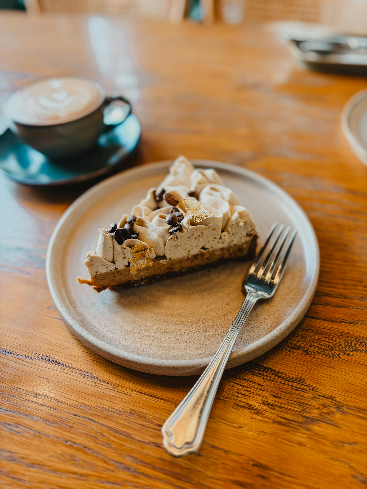

No Café da Esquina, cada xícara é um convite a desacelerar e saborear o momento. Um espaço acolhedor onde o aroma do café fresco se mistura com boas conversas e sabores caseiros.

No Café da Esquina, cada xícara é um convite a desacelerar e saborear o momento. Um espaço acolhedor onde o aroma do café fresco se mistura com boas conversas e sabores caseiros.
O Café da Esquina nasceu de um sonho antigo: criar um lugar onde o cheiro do café fresco se misturasse com boas conversas e momentos de tranquilidade. Com uma pequena esquina da cidade, criamos um espaço que amamos mobiliar e o desejo de oferecer mais do que bebidas — oferecer acolhimento.
Como o tempo, o que era um cantinho passou a ser um ponto de encontro de amigos, famílias e apaixonados por café. Hoje, seguimos com o mesmo propósito de quando abrimos as portas pela primeira vez: servir qualidade, carinho e aquele sabor que faz você se sentir em casa.